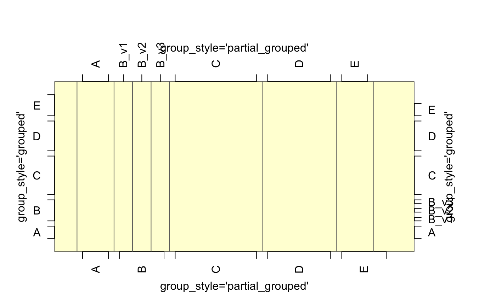

Draw grouped axis labels given a character vector.
Usage
groupedAxis(
side = 1,
x,
group_style = c("partial_grouped", "grouped", "centered"),
las = 2,
returnFractions = TRUE,
nudge = 0.2,
do_abline = FALSE,
abline_lty = "solid",
abline_col = "grey40",
do_plot = TRUE,
...
)Arguments
- side
integerindicating the axis side, passed tographics::axis(). 1=bottom, 2=left, 3=top, 4=right.- x
charactervector of axis labels- group_style
characterstring indicating the style of label:"partial_grouped"- uses square bracket to bound 2+ repeated entries, and single line tick mark for non-repeated entries."grouped"- uses square bracket to bound each set of repeated entries including non-repeated entries."centered"- only labels the center of each group of repeated entries with no bracket bounding the entries.
- las
integerindicating whether labels should be perpendicular, seegraphics::par("las").- returnFractions
logicalpassed tobreaksByVector()to calculate label positions. SetreturnFractions=FALSEand all labels will only appear at integer locations on the axis.- nudge
numericadjustment for labels away from the plot border.- do_abline
logicalindicating whether to drawgraphics::abline()lines inside the plot to indicate the exact breakpoints between each group of labels.- abline_lty
line type compatible with
graphics::par("lty"), used whendo_abline=TRUE.- abline_col
charactercolor used whendo_abline=TRUE.- do_plot
logicalwhether to plot the resulting axis, as an option to suppress the output and do something else with thedata.frameof coordinates returned by this function.- ...
additional arguments are passed to
breaksByVector(), and/or tographics::axis().
Value
data.frame invisibly, which contains the relevant axis
coordinates, labels, and whether the coordinate should
appear with a tick mark.
Details
This function extends breaksByVector() specifically for
axis labels. It is intended where character labels are spaced
at integer steps, and some labels are expected to be repeated.
See also
Other jam plot functions:
adjustAxisLabelMargins(),
coordPresets(),
decideMfrow(),
drawLabels(),
getPlotAspect(),
imageByColors(),
imageDefault(),
minorLogTicksAxis(),
nullPlot(),
plotPolygonDensity(),
plotRidges(),
plotSmoothScatter(),
shadowText(),
shadowText_options(),
showColors(),
sqrtAxis(),
usrBox()
Examples
withr::with_par(list("mar"=c(4,4,6,6)), {
b <- rep(LETTERS[1:5], c(2,3,5,4,3));
b2 <- c(b[1:2], makeNames(b[3:5]), b[6:16]);
nullPlot(doBoxes=FALSE,
doUsrBox=TRUE,
xlim=c(0,18),
ylim=c(0,18));
groupedAxis(1, b);
groupedAxis(2, b, group_style="grouped");
groupedAxis(2, b, group_style="centered");
groupedAxis(3, b2, do_abline=TRUE);
groupedAxis(4, b2, group_style="grouped");
graphics::mtext(side=1, "group_style='partial_grouped'", line=2, las=0);
graphics::mtext(side=2, "group_style='grouped'", line=2, las=0);
graphics::mtext(side=3, "group_style='partial_grouped'", line=2, las=0);
graphics::mtext(side=4, "group_style='grouped'", line=2, las=0);
})
